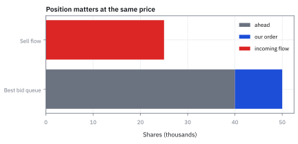
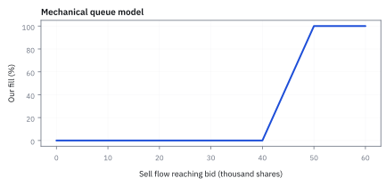
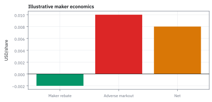
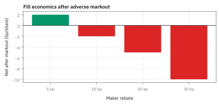

18.8 Order Book Depth, Queue Position, Maker-Taker
limit order ประหยัดครึ่ง spread และได้ rebate แต่ต้องต่อคิว ถ้าไม่ได้ของต้องไล่ราคาที่หนีไป การรอจึงคุ้มเฉพาะเมื่อโอกาสได้ของสูงพอ
ต้องซื้อหุ้น 10,000 หุ้น bid \$100.00 ask \$100.02 ที่ bid มีคำสั่งซื้อรออยู่ก่อนแล้ว 40,000 หุ้น เคาะซื้อทันทีเสียครึ่ง spread 1 เซนต์บวกค่าธรรมเนียม taker 0.3 เซนต์ ถ้าวาง limit order ต่อคิวที่ bid ได้ส่วนลดครึ่ง spread และ rebate 0.2 เซนต์ แต่ถ้าไม่ได้ของ ต้องไล่ซื้อทีหลังที่ราคาหนีไปแล้ว 5 เซนต์ แรงขายที่จะเข้ามาชน bid สุ่ม เฉลี่ย 50,000 หุ้น เพื่อนร่วมโต๊ะบอกว่า “รอสิ ได้ส่วนต่างตั้ง 2.5 เซนต์” ควรรอหรือเคาะ?
ลองตอบก่อนเปิดเฉลย
ควรเคาะ ต่อท้ายคิว 40,000 หุ้นโดยเฉลี่ยได้ของแค่ 40.7% ส่วนที่เหลือต้องไล่ซื้อแพงขึ้น 5 เซนต์ ต้นทุนเฉลี่ยของการรอคือ 3.25 เซนต์ต่อหุ้นเทียบ midpoint ขณะที่เคาะทันทีเสีย 1.3 เซนต์ การรอจะคุ้มก็ต่อเมื่อได้ของอย่างน้อยสองในสาม ซึ่งต้องมีคิวข้างหน้าไม่เกินราว 15,400 หุ้น
สิ่งที่เราจะสร้าง
18.5 มอง order book เป็นขั้นบันไดของราคาที่คำสั่งใหญ่ต้องกิน หน้านี้มองจากอีกฝั่ง: ถ้าเราเป็นคนวางคำสั่งรอ (maker) แทนคนเคาะ (taker) จะได้ของเมื่อไร ได้เท่าไร และค่าธรรมเนียมที่ตลาดจ่ายคืนให้คนวางรอ (rebate) คุ้มกับความเสี่ยงไหม
ลำดับคือ กติกาคิวแบบราคาก่อนเวลา ให้แรงขายสุ่มแบบ exponential แล้วหาโอกาสได้ของและสัดส่วนที่ได้เฉลี่ยด้วยอินทิกรัล ตั้งบัญชีค่าธรรมเนียม maker และ taker หาราคาที่วิ่งสวนได้มากที่สุดก่อนการรอจะแพ้ หาโอกาสได้ของขั้นต่ำ (สองในสาม) ตอบโจทย์เปิดหน้า และหาว่าคิวลึกแค่ไหนยังรอได้
ศัพท์ที่ใช้ในหัวข้อนี้
- Limit order book และ price-time priority
- ฐานข้อมูลของคำสั่งซื้อและขายที่รอจับคู่ ราคาที่ดีกว่าได้ก่อน ถ้าราคาเท่ากัน คำสั่งที่มาก่อนได้ก่อน ตำแหน่งในคิวจึงมีค่า
- Maker และ taker
- maker วางคำสั่งรอและเพิ่มสภาพคล่อง taker เข้ามาชนคำสั่งที่รออยู่ ตลาดหลายแห่งจ่าย rebate ให้ maker และเก็บค่าธรรมเนียมจาก taker
- Fill probability และ fill fraction
- โอกาสที่คำสั่งที่วางรอจะได้จับคู่ภายในเวลาที่กำหนด และสัดส่วนของคำสั่งที่ได้โดยเฉลี่ย ต้องใช้ตัวหลังเมื่อคำสั่งได้บางส่วน
- Markout และ adverse selection
- markout คือราคาเคลื่อนไปเท่าไรหลังได้ของ ถ้าคำสั่งรอของเรามักได้ของตอนที่ราคากำลังวิ่งสวน markout จะเป็นต้นทุน นี่คือ adverse selection ของ maker
- Lit pool และ dark pool
- lit คือตลาดที่แสดงคำสั่งก่อนซื้อขาย dark คือที่ซื้อขายก้อนใหญ่ได้โดยไม่เปิดขนาดหรือตัวตนจนกว่าจะซื้อขายแล้ว ลด impact แต่ไม่รู้ว่าจะได้เท่าไร
สัญลักษณ์และหน่วย
| สัญลักษณ์ | ความหมาย | หน่วย |
|---|---|---|
| $q_0,\ Q$ | หุ้นที่รออยู่หน้าเรา และขนาดคำสั่งของเรา | หุ้น |
| $M,\ \mu$ | แรงขายที่เข้ามาชน bid ในช่วงที่รอ และค่าเฉลี่ยของมัน | หุ้น |
| $s,\ f_t,\ r_m$ | spread, ค่าธรรมเนียม taker และ rebate ของ maker | \$ ต่อหุ้น |
| $D$ | ราคาที่หนีไปเมื่อต้องไล่ซื้อส่วนที่ไม่ได้ | \$ ต่อหุ้น |
| $\Delta P$ | markout: ราคาวิ่งสวนหลังได้ของ | \$ ต่อหุ้น |
| $\varphi$ | สัดส่วนของคำสั่งที่ได้โดยเฉลี่ย | ไม่มีหน่วย |
ขั้นที่ 1 — กติกาคิว: ได้ของเมื่อแรงขายกินคิวหน้าหมดแล้ว
คอร์สนิยาม limit order book ว่าเรียงคำสั่งตามราคาก่อน แล้วตามเวลาที่มาถึง ที่ราคาเดียวกันแรงขาย $M$ หุ้นจะจับคู่กับ 40,000 หุ้นที่มาก่อนเรา เหลือเท่าไรจึงถึงคำสั่งเรา และได้ไม่เกินที่วางไว้ นี่คือกติกา (สมมติว่าไม่มีใครข้างหน้ายกเลิก)
$R$ คือแรงขายที่เหลือหลังกินคิวหน้าหมด ถ้า $M-q_0$ ติดลบแปลว่ายังไม่ถึงเรา จึงมีตัวเลือกศูนย์กันไว้ ก้อนนอกจำกัดไม่ให้ได้เกิน $Q$ แรงขายต่ำกว่า 40,000 หุ้นไม่ให้อะไรเลยไม่ว่าจะรอนานแค่ไหน ระหว่าง 40,000 ถึง 50,000 ได้เพิ่มเป็นเส้นตรง ราคาเดียวกันจึงไม่ได้แปลว่าโอกาสเท่ากัน
Figure 18.8a — คิวที่ต้องผ่านก่อนถึงคำสั่งเรา

แถบบน (Best bid queue) สีเทาคือ 40,000 หุ้นที่รอก่อน สีน้ำเงินคือ 10,000 หุ้นของเราต่อท้าย แถบล่าง (Sell flow) สีแดงคือแรงขาย 25,000 หุ้น ซึ่งหมดก่อนถึงเรา จึงได้ศูนย์หุ้นตามแถวที่สองของขั้นที่ 1
Figure 18.8b — สัดส่วนที่ได้ตามแรงขาย

แกนนอนคือแรงขายที่ถึง bid 0 ถึง 60,000 หุ้น (301 จุด) แกนตั้งคือเปอร์เซ็นต์ของ 10,000 หุ้นที่ได้ $F(M)/Q$ เป็นศูนย์ถึง 40,000 ขึ้นเป็นเส้นตรงถึง 100% ที่ 50,000 แล้วคงที่ เป็นกติกาแบบไม่มีการสุ่ม ขั้นที่ 2 จะใส่การสุ่มของ $M$
ขั้นที่ 2 — แรงขายสุ่ม: โอกาสได้ของ และสัดส่วนที่ได้โดยเฉลี่ย
แรงขายที่จะมาจริงไม่รู้ล่วงหน้า สมมติ (เป็นแบบจำลองเพื่อสอน) ว่า $M$ มีการแจกแจงแบบ exponential ค่าเฉลี่ย $\mu=50{,}000$ หุ้น ซึ่งมี $P(M\gt m)=e^{-m/\mu}$ (1.8) คำนวณสามอย่าง: ได้บ้าง ได้ครบ และได้เฉลี่ยกี่หุ้น ข้อสุดท้ายใช้ความจริงว่าค่าเฉลี่ยของตัวแปรที่ไม่ติดลบคืออินทิกรัลของ $P(\cdot\gt m)$
เราได้หุ้นที่ระดับ $m$ (ระหว่าง $q_0$ กับ $q_0+Q$) ก็ต่อเมื่อ $M\gt m$ บวกโอกาสเหล่านี้ทุกระดับจึงได้จำนวนหุ้นเฉลี่ย อินทิกรัลของ $e^{-m/\mu}$ คือ $-\mu e^{-m/\mu}$ ต่อท้ายคิว 40,000 หุ้น โอกาสได้บ้าง 44.93% ได้ครบ 36.79% และได้เฉลี่ย 40.72% ของคำสั่ง
ถ้าอยู่หัวคิว ($q_0=0$) ได้บ้างแน่นอน ได้ครบ $e^{-0.2}=81.87\%$ และได้เฉลี่ย 90.63% ความลึกของคิวลดโอกาสแบบ exponential ไม่ใช่เส้นตรง โค้ดท้ายหน้าจำลองแรงขาย 400,000 ครั้งได้ 44.88%, 36.78% และ 40.68%
ขั้นที่ 3 — บัญชีต่อหุ้นของ maker และ taker
วัดทุกอย่างเทียบ midpoint $\$100.01$ ต้นทุนเป็นบวก taker ซื้อที่ ask เสียครึ่ง spread บวกค่าธรรมเนียม maker ที่ได้ของซื้อที่ bid ได้ครึ่ง spread กับ rebate คืน แต่ถ้าหลังได้ของราคาวิ่งสวน $\Delta P$ ก็เป็นต้นทุน ส่วนที่ไม่ได้ต้องกลับไปเป็น taker ที่ราคาหนีไปแล้ว $D$
rebate เกิดเฉพาะหุ้นที่ได้ และเล็กมาก 0.2 เซนต์ ถ้าได้ของแล้วราคาวิ่งสวน 1 เซนต์ ผลต่อหุ้นที่ได้คือ $0.002-0.010=-0.008$ rebate ชดเชยได้แค่หนึ่งในห้า ขั้นที่ 4 และ 5 ชั่งทุกก้อนพร้อมกัน
Figure 18.8c — rebate เล็กกว่าราคาที่วิ่งสวนได้ง่าย

หน่วยดอลลาร์ต่อหุ้น เครื่องหมายแบบต้นทุน (บวกคือเสีย): rebate −0.002 (ลดต้นทุน) markout ที่วิ่งสวน +0.010 และสุทธิ +0.008 ตัวเลขสมมติ ไม่ใช่ตารางค่าธรรมเนียมของตลาดใด ชี้ว่าต้องวัด markout หลังได้ของ ไม่ใช่ดูแค่ rebate
ขั้นที่ 4 — markout มากที่สุดที่การรอยังเสมอกับการเคาะ
ตั้งต้นทุนเฉลี่ยของการรอให้เท่ากับการเคาะ แล้วแก้หา $\Delta P$ จะได้ markout ที่มากที่สุดที่การรอยังไม่แพ้ ถ้าวัดได้จริงว่า markout สูงกว่านี้ ควรเคาะ
แถวที่สองได้จากย้าย $(1-\varphi)C_T$ ไปรวมกับ $C_T$ ทางขวา แถวสุดท้ายแทน $C_{M|F}$ และ $C_T$ ลงไป ครึ่ง spread สองข้างรวมเป็น $s$ ถ้าได้ของแน่นอน ($\varphi=1$) คือ $0.02+0.003+0.002=\$0.025$ ต่อหุ้น ก้อน $\frac{1-\varphi}{\varphi}D$ คือค่าไล่ราคาของส่วนที่พลาด เฉลี่ยต่อหุ้นที่ได้
ตัวอย่าง: ต่อท้ายคิว 40,000 ($\varphi=0.4072$) และไล่ราคาแค่ $D=0.01$ ได้ $\Delta P^*=0.025-1.4555(0.01)=\$0.0104$ ถ้า markout ที่วัดได้ต่ำกว่า 1.04 เซนต์ การรอคุ้ม
Figure 18.8d — rebate สูงมักมากับ markout สูง

สี่คู่สมมติของ rebate กับ markout ในหน่วย bp ของราคา: rebate 5, 10, 20, 30 คู่กับ markout 3, 12, 25, 40 ผลสุทธิ $+2,\ -2,\ -5,\ -10$ bp มีแค่คู่แรกที่ได้ ข้อควรรู้: ตัวเลขสูงเกินจริงเพื่อให้เห็นชัด (rebate จริงราว 0.2 เซนต์ต่อหุ้น) และการที่ rebate สูงมาคู่กับ markout สูงเป็นสมมติฐานของรูป ไม่ใช่ข้อมูล
ขั้นที่ 5 — โอกาสได้ของขั้นต่ำ: จุดตัดสองในสาม
ถ้าไม่มี markout เลย ($\Delta P=0$) การรอยังคุ้มไหม? ตั้ง $\Delta P^*=0$ แล้วแก้หา $\varphi$ ได้สัดส่วนที่ต้องได้อย่างน้อย ใช้ $D=0.05$ ของโจทย์เปิดหน้า และดูตารางของ $\Delta P^*$ ที่ $\varphi$ หลายค่า
ต่ำกว่าสองในสาม $\Delta P^*$ ติดลบ แปลว่าการรอจะคุ้มก็ต่อเมื่อราคาต้องวิ่งมาทางที่ดีกับเราหลังได้ของ ซึ่งมักไม่เกิด เพราะคำสั่งรอมักได้ของตอนราคาวิ่งสวน สูตรจุดตัดใช้กับตัวเลขชุดอื่นได้ทันที: สัดส่วนของค่าไล่ราคาต่อผลรวมของทุกก้อน
ขั้นที่ 6 — ตอบโจทย์เปิดหน้า: รอหรือเคาะ
โจทย์ให้อะไรมาบ้าง: $\varphi=0.4072$ จากขั้นที่ 2, $s=0.02$, $f_t=0.003$, $r_m=0.002$, $D=0.05$ และสมมติว่าไม่มี markout
คำตอบ: เคาะทันทีเสีย 1.30 เซนต์ต่อหุ้น รอเสียเฉลี่ย 3.25 เซนต์ (ค่าเต็ม 0.032456) แพงกว่าเกือบสองเท่าครึ่ง ทั้งที่ยังไม่นับ markout เลย สาเหตุคือ $\varphi=40.7\%$ ต่ำกว่าจุดตัด $66.7\%$ มาก “ส่วนต่าง 2.5 เซนต์” ที่เพื่อนเห็นได้เฉพาะหุ้นที่ได้ของ ซึ่งมีแค่ราว 4 ใน 10
ตรวจเองใน 10 วินาที: $0.4072\times(-1.2)+0.5928\times6.3=-0.489+3.735=3.246$ เซนต์
ขั้นที่ 7 — ตำแหน่งในคิวมีราคา: คิวลึกได้แค่ไหนจึงยังรอได้
ขั้นที่ 5 บอกว่าต้องได้อย่างน้อยสองในสาม ขั้นที่ 2 บอกว่าสัดส่วนที่ได้ขึ้นกับคิวข้างหน้า รวมสองเรื่องแล้วแก้หาคิวที่ลึกที่สุด $q^*$ ที่ยังได้ $\varphi=2/3$
แถวแรกคือ $\varphi$ ของขั้นที่ 2 เขียนใหม่โดยดึง $e^{-q_0/\mu}$ ออกมา ถ้ามีหุ้นรอข้างหน้าไม่เกินราว 15,400 หุ้น การรอชนะการเคาะ (เมื่อไม่มี markout) ลึกกว่านั้นให้เคาะ นี่คือเหตุที่ระบบส่งคำสั่งพยายามรักษาตำแหน่งในคิว แทนที่จะยกเลิกแล้วส่งใหม่ซึ่งทำให้ไปต่อท้าย
คำถามที่ควรถามออกมาดัง ๆ
เลือก market order หรือ limit order จากอะไร? คอร์สสรุปว่า market order ได้ของทันทีแต่ซื้อแพงขายถูก limit order ได้ราคาดีกว่าแต่ไม่รู้ว่าจะได้เมื่อไร สิ่งที่ตัดสินคือความรีบ ความผันผวนของราคา และส่วนลดที่ให้คนวางรอ ในสูตรของหน้านี้ ความรีบกับความผันผวนอยู่ใน $D$ ส่วนลดอยู่ใน $s/2$ กับ $r_m$
dark pool อยู่ตรงไหนในเรื่องนี้? dark pool ไม่แสดงขนาดและตัวตนจนกว่าจะซื้อขาย จึงไม่ดันราคาก่อน แต่ไม่รู้ว่าจะได้เท่าไร คอร์สยกตัวเลขว่า dark pool มีส่วนแบ่งราว 11 ถึง 12% ของปริมาณในบางหุ้น ซึ่งทำให้ราคาในตลาดเปิดสะท้อนมูลค่าได้แย่ลง และคนที่ได้ซื้อก้อนใหญ่ใน dark pool เจอ winner's curse ปี 2009 SEC ออกมาตรการให้ dark pool โปร่งใสขึ้น
ถ้าคนข้างหน้ายกเลิกคำสั่งล่ะ? การยกเลิกข้างหน้าทำให้เราเลื่อนขึ้น ได้ของมากกว่าที่ขั้นที่ 2 คำนวณ แต่คนมักยกเลิกเมื่อเห็นว่าราคากำลังจะวิ่งสวน ซึ่งเป็นตอนที่เราไม่อยากได้ของที่สุด
ความผิดที่ให้คำตอบผิดแบบเงียบ ๆ
นับ rebate เป็นกำไร: rebate 0.2 เซนต์ได้เฉพาะหุ้นที่ได้ของ และ markout 1 เซนต์ก็กินหมดแล้ว (ผลสุทธิ −0.8 เซนต์)
ใช้โอกาสได้บ้างแทนสัดส่วนที่ได้: ขั้นที่ 4 ถ้าใช้ 0.4493 แทน 0.4072 จะได้ $\Delta P^*=\$0.0127$ แทน \$0.0104 ประเมินการรอดีเกินจริง เพราะหลายครั้งได้แค่บางส่วน
ลืมค่าไล่ราคาของส่วนที่ไม่ได้: โจทย์เปิดหน้าดูแค่ 2.5 เซนต์ของหุ้นที่ได้ ต้นทุนเฉลี่ยจริงของการรอคือ 3.25 เซนต์ เทียบ 1.30 ของการเคาะ
เชื่อว่าคิวที่เห็นคือคิวจริง: มีคำสั่งซ่อน การยกเลิก และกติกาต่างกันตามตลาด ต้องวัดอัตราการได้ของจริงแยกตามตลาดและฝั่งซื้อขาย
ใช้ทำอะไรบนโต๊ะจริง
ระบบส่งคำสั่งตัดสินทุกคำสั่งว่าจะวางรอหรือเคาะด้วยตรรกะของขั้นที่ 4 ถึง 7 โดยใช้ตัวเลขที่วัดเอง: สัดส่วนที่ได้ตามความลึกของคิว markout หลังได้ของที่ 1 วินาที 10 วินาที และ 1 นาที และราคาที่หนีไปเมื่อพลาด ถ้าต้องปิดความเสี่ยงก่อนตลาดปิด $D$ ใหญ่มาก จุดตัดเข้าใกล้หนึ่ง จึงควรเคาะ
สามโจทย์ตรวจความเข้าใจ
1. ถ้าคิวข้างหน้ามี 20,000 หุ้น (อย่างอื่นเท่าโจทย์เปิดหน้า) โอกาสได้บ้าง ได้ครบ และสัดส่วนที่ได้เฉลี่ยเป็นเท่าไร ควรรอไหม?
เฉลย
$e^{-0.4}=67.03\%$, $e^{-0.6}=54.88\%$, $\varphi=5(0.6703-0.5488)=60.75\%$ ยังต่ำกว่า 66.7% จึงควรเคาะ สอดคล้องกับขั้นที่ 7 ที่คิวต้องไม่เกินราว 15,400 หุ้น
2. ต่อท้ายคิว 40,000 หุ้นเหมือนเดิม แต่ไม่รีบ ถ้าพลาดราคาหนีไปแค่ $D=0.01$ จุดตัดคือเท่าไร และถ้าไม่มี markout ควรรอไหม?
เฉลย
$\varphi^*=0.01/(0.01+0.025)=28.57\%$ และ $\varphi=40.72\%$ สูงกว่า จึงรอได้ ต้นทุนเฉลี่ยของการรอคือ $0.4072(-0.012)+0.5928(0.023)=\$0.0087$ ต่ำกว่า \$0.013 ของการเคาะ แต่ต้องตรวจว่า markout จริงต่ำกว่า \$0.0104 ของขั้นที่ 4
3. ตลาดหนึ่งเก็บค่าธรรมเนียม taker 0.30 เซนต์ต่อหุ้น (เพดานของกฎ Reg NMS) และจ่าย rebate 0.20 เซนต์ ถ้าวันหนึ่งมีการจับคู่ 1,000,000 หุ้น ใครได้เงินเท่าไร?
เฉลย
taker จ่าย $10^6(0.003)=\$3{,}000$ maker ได้ $10^6(0.002)=\$2{,}000$ ตลาดเก็บส่วนต่าง \$1,000 นี่คือเหตุที่ตลาดยอมจ่าย rebate: มันซื้อสภาพคล่องที่ดึง taker เข้ามา
คำนวณซ้ำด้วย JavaScript
โค้ดนี้คิดกติกาคิว โอกาสได้บ้าง ได้ครบ และสัดส่วนที่ได้เฉลี่ยแบบสูตรปิด ตรวจด้วยการจำลองแรงขาย 400,000 ครั้ง คิดต้นทุนของการรอและการเคาะ markout ที่เสมอตัว จุดตัด และคิวที่ลึกที่สุดที่ยังรอได้ด้วย bisection แล้วพิมพ์ตัวเลขหลักหนึ่งบรรทัด
const {exp, log, min, max} = Math;
function shares(name, v) {
if (!(typeof v === 'number' && Number.isFinite(v) && v >= 0)) throw new RangeError(`${name} must be a non-negative number`);
return v;
}
// Price-time priority: incoming sell flow M first fills the q0 shares ahead of us, then our Q shares.
const fillShares = (Q, M, q0) => min(shares('Q', Q), max(0, shares('M', M) - shares('q0', q0)));
// Sell flow M exponential with mean mu: chance of any fill, of a full fill, and the expected filled fraction.
function queue(Q, q0, mu) {
if (!(mu > 0)) throw new RangeError('mu must be positive');
const a = exp(-q0 / mu), b = exp(-(q0 + Q) / mu);
return {any: a, full: b, fraction: mu * (a - b) / Q}; // E[fill] = integral of P(M > m) from q0 to q0 + Q
}
// Costs per share measured from the mid: take now, or rest and (if not filled) take later after the price moved D.
function restOrTake({s, fee, rebate, D, phi, markout = 0}) {
if (!(phi > 0 && phi <= 1)) throw new RangeError('fill fraction must be in (0, 1]');
const take = s / 2 + fee, filled = -s / 2 - rebate + markout;
return {take, filled, rest: phi * filled + (1 - phi) * (take + D),
breakevenMarkout: s + fee + rebate - (1 - phi) / phi * D, cutoff: D / (D + s + fee + rebate)};
}
function mulberry32(seed) {
return () => {
seed |= 0; seed = seed + 0x6D2B79F5 | 0;
let t = Math.imul(seed ^ seed >>> 15, 1 | seed);
t = t + Math.imul(t ^ t >>> 7, 61 | t) ^ t;
return ((t ^ t >>> 14) >>> 0) / 4294967296;
};
}
const q = queue(10000, 40000, 50000);
const fees = {s: 0.02, fee: 0.003, rebate: 0.002};
// Simulate 400,000 random sell flows to check the closed forms.
const rnd = mulberry32(11);
let any = 0, full = 0, filled = 0;
for (let i = 0; i < 400000; i++) {
const M = -50000 * log(1 - rnd()), f = fillShares(10000, M, 40000);
if (f > 0) any++; if (f === 10000) full++; filled += f;
}
// Deepest queue at which resting still breaks even with zero markout (fill fraction = 2/3), by bisection.
let lo = 0, hi = 200000;
for (let k = 0; k < 200; k++) { const m = (lo + hi) / 2; if (queue(10000, m, 50000).fraction > 2 / 3) lo = m; else hi = m; }
console.log(JSON.stringify({
mechanics: [25000, 40000, 45000, 50000].map(M => fillShares(10000, M, 40000)),
queue: q, front: queue(10000, 0, 50000), sim: {any: any / 4e5, full: full / 4e5, fraction: filled / 4e5 / 10000},
hookCost: restOrTake({...fees, D: 0.05, phi: q.fraction}),
smallD: restOrTake({...fees, D: 0.01, phi: q.fraction}),
anyAsPhi: restOrTake({...fees, D: 0.01, phi: q.any}),
table: [1, 0.8, 2 / 3, 0.5].map(p => restOrTake({...fees, D: 0.05, phi: p}).breakevenMarkout),
maxQueue: (lo + hi) / 2,
rebateVsMarkout: 0.002 - 0.010,
exercises: {q20: queue(10000, 20000, 50000), fees: {taker: 1e6 * 0.003, maker: 1e6 * 0.002, venue: 1e6 * 0.001}}
}));ที่มาที่ไป
ก่อนปลายทศวรรษ 1990 ตลาดหุ้นสหรัฐฯ ซื้อขายเป็นเศษส่วนของดอลลาร์ (หนึ่งในแปดหรือหนึ่งในสิบหก) และ spread กว้างกว่าทุกวันนี้มาก กฎ Order Handling Rules ของ SEC ปี 1997 เปิดทางให้ตลาดอิเล็กทรอนิกส์ (ECN) แข่งขัน และ Island ECN เป็นที่รู้จักในฐานะผู้เริ่มจ่าย rebate ให้คนวางคำสั่งรอแล้วเก็บค่าธรรมเนียมจากคนเคาะ ราคาหุ้นสหรัฐฯ เปลี่ยนเป็นทศนิยมในปี 2001 และกฎ Regulation NMS ปี 2005 กำหนดเพดานค่าธรรมเนียมการเข้าถึงไว้ที่ 0.30 เซนต์ต่อหุ้น
ข้อจำกัด: วิธีนี้สมมติอะไร และของจริงเป็นอย่างไร
| สมมติอะไร | ของจริง | ผลเวลาใช้งาน |
|---|---|---|
| แรงขายเป็น exponential และไม่มีใครยกเลิก | แรงขายมาเป็นก้อน คนข้างหน้ายกเลิกและมีคำสั่งซ่อน | ต้องประมาณสัดส่วนที่ได้จากข้อมูลของตัวเอง ขั้นที่ 2 เป็นแค่รูปทรง |
| ได้ของแบบสุ่ม ไม่ขึ้นกับทิศทางราคา | คำสั่งรอมักได้ของตอนราคากำลังวิ่งสวน | markout ในขั้นที่ 4 ต้องวัดจริง และมักกิน rebate หมด |
| ค่าธรรมเนียมคงที่ | ต่างกันตามตลาดและเปลี่ยนได้ | กลยุทธ์ที่คุ้มเพราะ rebate อาจเลิกคุ้มทันทีเมื่อตารางค่าธรรมเนียมเปลี่ยน |
สิ่งที่ควรตอบได้หลังอ่าน
- ที่ราคาเดียวกัน คำสั่งได้ของเมื่อแรงขายกินคิวหน้าหมด: $F=\min\{Q,\max(0,M-q_0)\}$
- ถ้าแรงขายเป็น exponential ต่อท้ายคิว 40,000 ได้บ้าง 44.93% ได้ครบ 36.79% และได้เฉลี่ย 40.72% ซึ่งต้องใช้ตัวหลังในการตัดสินใจ
- markout ที่เสมอตัวคือ $s+f_t+r_m-\frac{1-\varphi}{\varphi}D$ และการรอคุ้มเมื่อ $\varphi\ge D/(D+s+f_t+r_m)$ ซึ่งคือ 2/3 ในโจทย์
- โจทย์เปิดหน้า: รอเสียเฉลี่ย 3.25 เซนต์ เคาะเสีย 1.30 เซนต์ และรอได้เฉพาะเมื่อคิวข้างหน้าไม่เกินราว 15,400 หุ้น
18.9 ใช้ต้นทุนการซื้อขายทั้งหมดของบทนี้กับการ arbitrage ที่เห็นบ่อยที่สุด: ราคา ETF ที่ห่างจากมูลค่าตะกร้าหุ้น ต้องห่างแค่ไหนจึงคุ้มที่จะแลก